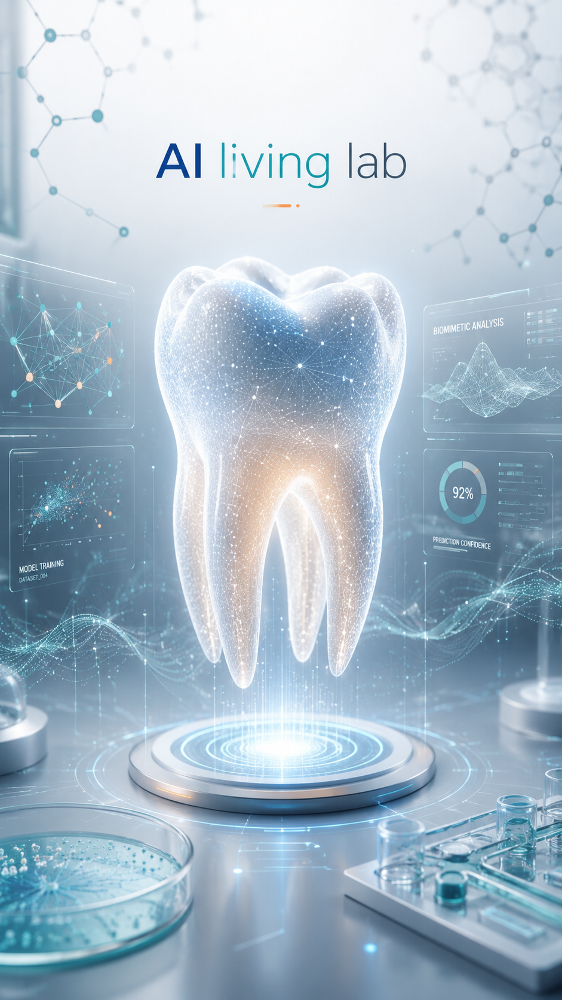

Two of A/P Rosa's Papers Among the Most Cited in Regenerative Endodontics
A bibliometric analysis published in the Journal of Endodontics ranked two of A/P Rosa's contributions among the 100 most-cited articles in regenerative endodontics worldwide.

A 2018 bibliometric analysis published in the Journal of Endodontics mapped the 100 most-cited articles in regenerative endodontics worldwide. Two papers from A/P Vinicius Rosa’s research were included in this ranking, placing his work among the most internationally impactful contributions to the field.
The first paper, “Dental Pulp Tissue Engineering in Full-length Human Root Canals,” published in the Journal of Dental Research in 2013, ranked #26 on the list. This work addressed one of the central challenges in dental pulp regeneration: engineering functional pulp-like tissue within the anatomically complex geometry of a full-length root canal — a model far more representative of clinical conditions than simplified laboratory constructs.
Two papers among the 100 most-cited articles in regenerative endodontics worldwide.
The second paper, “Regenerative endodontics in light of the stem cell paradigm,” published in the International Dental Journal in 2011, ranked #98. This earlier work positioned regenerative endodontics within the broader framework of stem cell biology, examining how advances in stem cell research were reshaping the conceptual and clinical approach to dental pulp regeneration.
A bibliometric ranking reflects more than citation counts — it maps which ideas have most shaped the thinking of a research community. The presence of two papers across different journals and different years speaks to the sustained and formative influence of A/P Rosa’s contributions to dental pulp tissue engineering and regenerative endodontics.